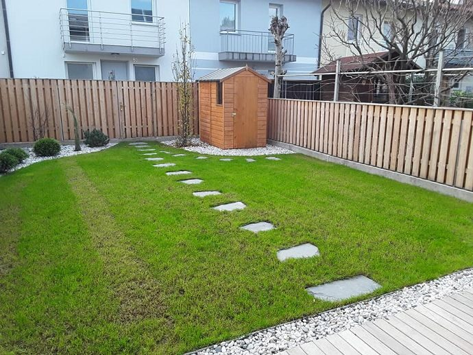
Lesene ograje
Klasičen videz toplega lesa, po meri izdelano in zaščiteno proti vremenu. Idealno za hiše, posestva in podeželje.
Načrtuj svojo →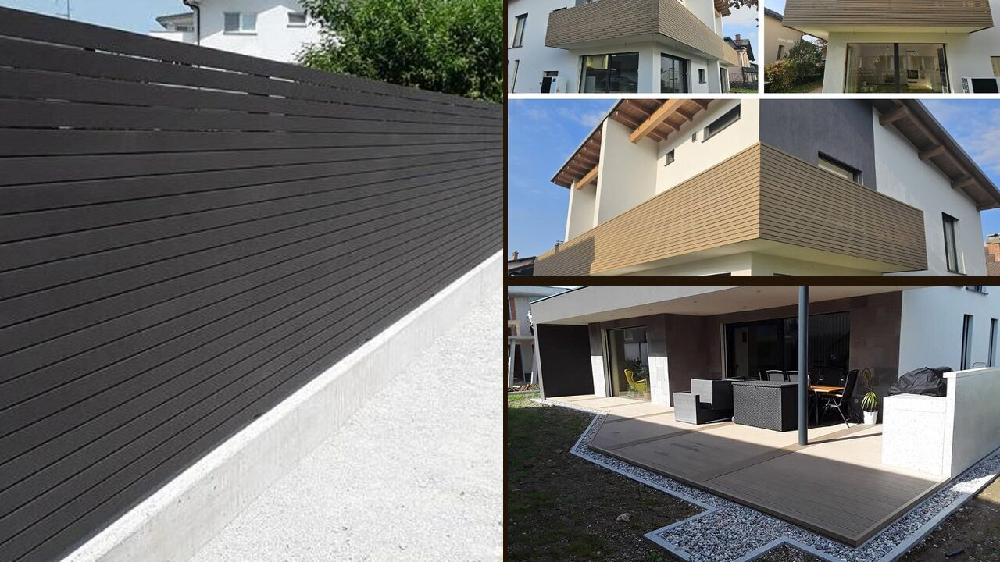
Bela krajina · Slovenija · od 1996
Izdelava in montaža lesenih, WPC, panelnih in kovinskih ograj, lesenih nadstreškov s steklom ter WPC teras in fasad. Zanesljivo in natančno — po celotni Sloveniji.
Storitve
Pri Ograjah Lozar celoten postopek opravim sam: svetovanje, izmera, izdelava in montaža. Uporabljam suho rezan les, WPC kompozit in zaščitene kovine.

Klasičen videz toplega lesa, po meri izdelano in zaščiteno proti vremenu. Idealno za hiše, posestva in podeželje.
Načrtuj svojo →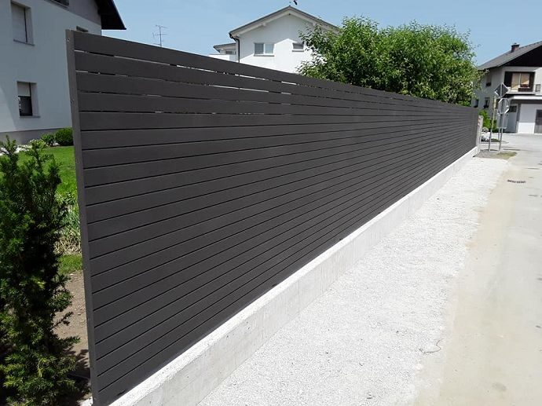
Lesno-polimerski kompozit brez vzdrževanja: ne gnije, ne bledi, barvno obstojen. Popolnoma sodoben videz.
Načrtuj svojo →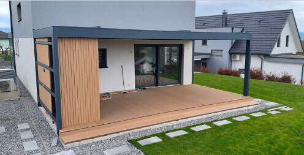
Leseni nadstreški v kombinaciji s steklom — za teraso, avtomobile in sproščanje na prostem skozi celo leto.
Načrtuj svojega →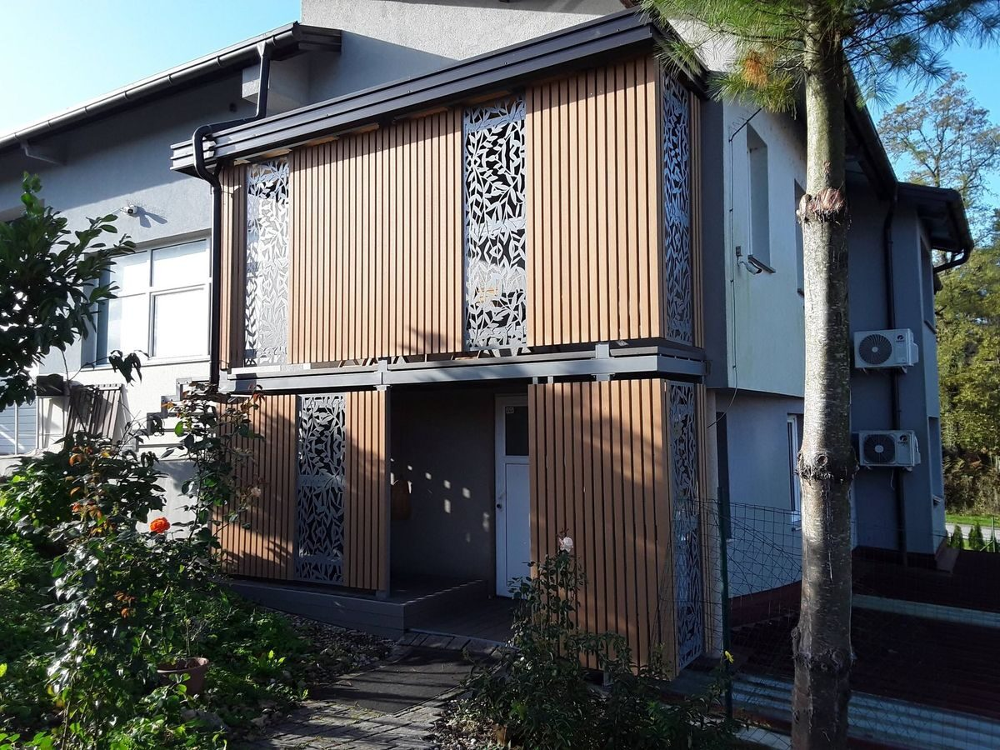
Montaža WPC teras in fasadnih oblog — odporne in trpežne površine brez oljenja in brušenja.
Načrtuj →Hitra, ugodna in urejena rešitev za večje dolžine ograd.
Statično robustne konstrukcije, požarno varne, dolgoživost.
Material pripeljem na lokacijo, poskrbim pa tudi za prodajo elementov.
Priporočim material in detajle glede na teren in proračun.
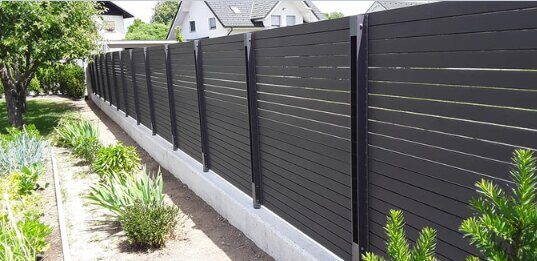
Dogovorjeno velja — postavčno in brez skritih stroškov.
Zakaj izbrati Ograje Lozar
Postopek
Pokličete ali pišete; skupaj uskladimo idejo, material in okvirni proračun.
Pridem na ogled, izmerim in svetujem — izmera je brezplačna.
Jasna, postavčna ponudba z rokom izvedbe in garancijskimi pogoji.
Elemente pripravim po meri v delavnici, da je montaža hitra in čista.
Montiram na lokaciji, uredim okolico in predam v uporabo.
Realizacije
Vse fotografije so last podjetja Ograje Lozar in prikazujejo dejansko izvedena dela.
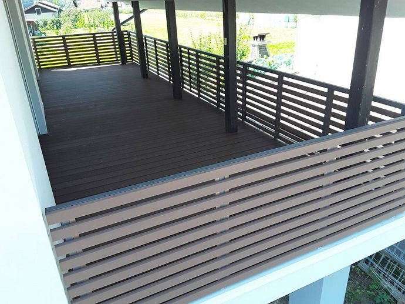
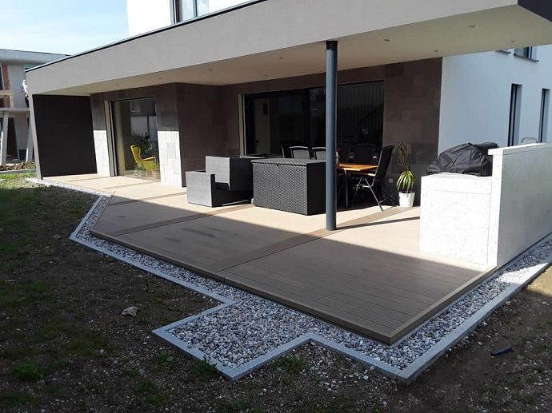
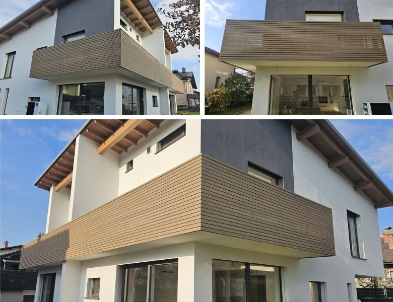
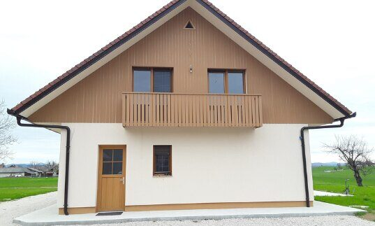
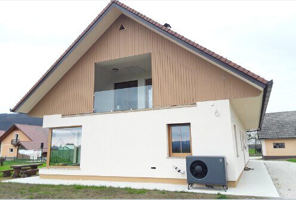
O nas
Igor Lozar s.p., ki posluje pod imenom Ograje Lozar, je samostojni obrtnik iz Gribelj pri Gradcu v Beli krajini. Registriran je 4. junija 1996 pod prvotnim imenom Lesne in druge storitve, danes pa ga stranke prepoznavajo predvsem po ograjah in nadstreških.
Delo vodim sam: kar se dogovoriva, tudi naredim. Zaradi tega se rok drži, kakovost pa se pozna v vsakem spoju. Opravljam izdelavo, prodajo, dobavo in montažo ograj in lesenih nadstreškov v kombinaciji s steklom, montiram pa tudi WPC terase in fasade.
Osnova dejavnosti je les, srce pa je pri detajlih, ki hišo dvignejo nad povprečje.
Pogosta vprašanja
Cena je odvisna od materiala (les / WPC / kovina), višine, talnega tipa in terena. Po brezplačni izmeri dobite postavčno ponudbo na meter tekoči — brez skritih stroškov.
Les daje topel, naraven videz in zahteva občasno zaščito (oljenje ali lazura). WPC (lesno-polimerski kompozit) je praktično brez vzdrževanja, barvno obstojen in odporen proti vlagi — priljubljen pri novejših fasadah.
Od potrditve ponudbe običajno 2–6 tednov, odvisno od sezone in obsega. Manjše sanacije pogosto opravim sproti.
Ne. Sedež imam v Gribljah pri Gradcu, delujem pa po celotni Sloveniji — od Pomurja do Primorske.
Da. Izmera in svetovanje na kraju samem sta brezplačna in neobvezujoča.
Kontakt
Kliknite, pokličite ali pišite — odgovorim hitro, običajno istega dne.